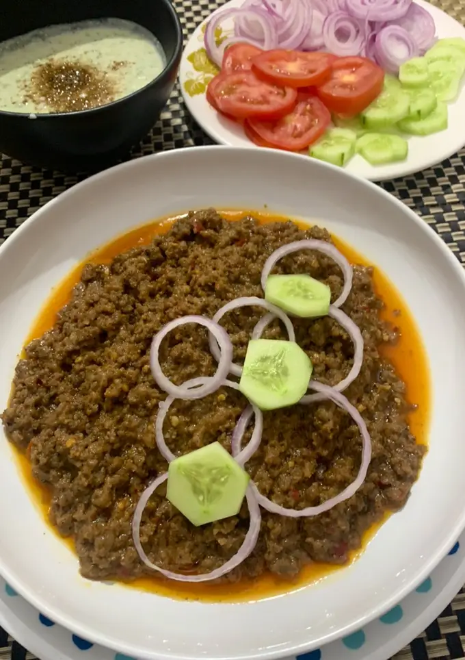

ASSNGMENT NO.4
KASHIF KHAN
Karachi k mashoor Waheed k kabab

Ingredients
Spices for marinade
- 1 tsp red chilli flakes
- 1 tsp red chilli powder
- 1 tsp salt
- 1 tsp black pepper
- 1 tsp garam masala
- 1 tsp coriander powder (roasted and ground)
Other
- 2 tbs fried brown onion (ground)
- 1/2 cup yogurt
- 1 tsp ginger garlic paste
- 1 tsp raw papaya paste
- 2 tbs butter
check out website